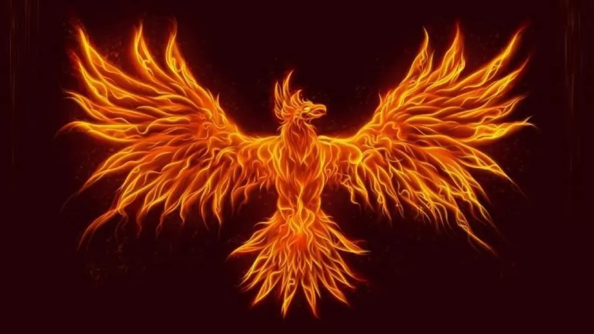

El fénix es una de las criaturas mitológicas más conocidas del mundo. Su origen se encuentra en antiguas culturas como la egipcia y la griega, aunque también aparece en otras tradiciones con diferentes nombres. Esta ave legendaria está estrechamente relacionada con el fuego, el Sol y la inmortalidad. Se dice que el fénix vive durante cientos o incluso miles de años. Cuando siente que su vida llega a su fin, construye un nido con ramas aromáticas y hierbas especiales. Después, el ave prende fuego a su propio nido y queda consumida por las llamas. Sin embargo, en lugar de desaparecer para siempre, de sus cenizas surge un nuevo fénix joven y fuerte, comenzando así un nuevo ciclo de vida. Por esta razón, el fénix simboliza el renacimiento, la esperanza, la superación y la capacidad de levantarse después de momentos difíciles. Actualmente sigue utilizándose como símbolo de transformación y fuerza.